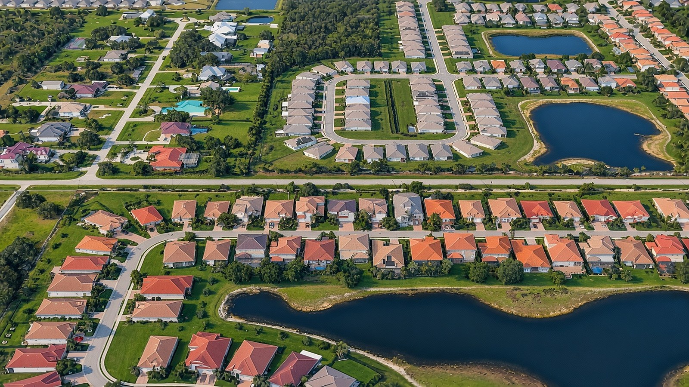
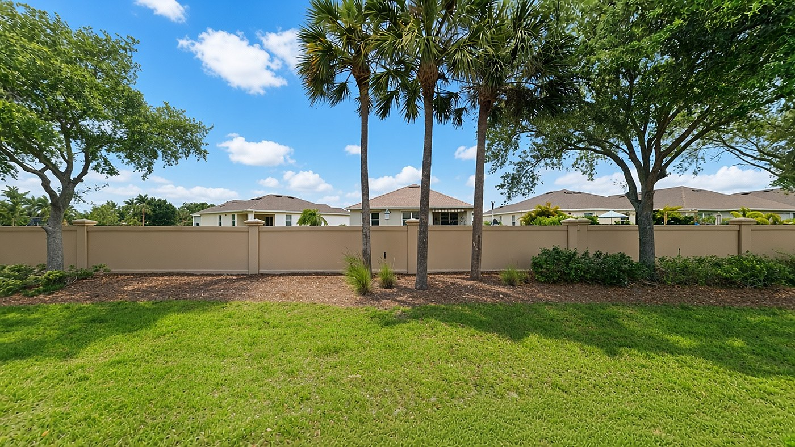

Draft preview for review. Not published. New Page for /explore/punta-gorda/river-club/. Goes live 2026-12-04. Images shown from local copies. Rollout batch

Explore · Punta Gorda · River Club
River Club is a gated community of about 350 newer single-family homes on the north side of the Peace River, with a Punta Gorda address and prices below most of the city's waterfront.
Every home here was built in 2006 or later, so buyers get newer construction without a golf or club price tag. Here is what the public record shows about River Club, Punta Gorda, and what to check before you buy. For nearby options north of the river, see Explore Punta Gorda.
The short version
North of the river. ZIP 33980, off Harborview Road, unincorporated Charlotte County.
All newer. Homes built 2006 to 2022; median 2018.
Gated. Pool, clubhouse with fitness room, and playground, per listing descriptions.
Mid-priced. Median qualified sale about $301,000 in 2025 and 2026.
350
single-family homes
2018
median year built
$264,000
median county just value
$301,000
median qualified sale, 2025 and 2026
Source: Charlotte County Property Appraiser, parcel file and subdivision list (downloaded Nov 20, 2026).
Location
Harborview Road, north of the Peace River.
River Club sits north of the Peace River in ZIP 33980, in unincorporated Charlotte County. Drivers reach the entrance from Harborview Road by turning onto Oakview Drive. Streets inside include Riverfront Drive and River Bank Way. Downtown Punta Gorda is across the U.S. 41 bridges to the south.
Source: Charlotte County Property Appraiser, parcel file and subdivision list (downloaded Nov 20, 2026).
Homes
Newer single-family homes.
The county roll lists 350 single-family homes and only 5 vacant residential lots, so River Club is essentially built out. The median home has about 1,980 square feet of living area, 20 percent have a private pool, and 33 percent carry the county's waterfront flag.
| Measure | Value |
|---|---|
| Single-family homes | 350 |
| Years built | 2006 to 2022 |
| Homes built 2020 or later | 32% |
| Median county just value | $264,000 |
| Middle half of just values | $240,000 to $308,000 |
| Median qualified sale, 2025 and 2026 | $301,000 (30 sales) |
County figures come from the Charlotte County Property Appraiser's public parcel file (downloaded November 20, 2026). Just value is the county's market value estimate on the latest certified roll, not an appraisal or a list price. Sale figures use each parcel's most recent recorded sale when that sale was qualified and dated 2025 or 2026.
Source: Charlotte County Property Appraiser, parcel file and subdivision list (downloaded Nov 20, 2026).

River Club homes behind the community wall.
Before you buy
Get the association documents early.
River Club does not publish much online, so ask for the association documents up front: the HOA budget and dues, the rules, and any special assessments. Then confirm the flood zone and insurance cost, and the schools assigned to the specific address.
Dues, rules, and reserves. Ask the seller or manager early.
Pull the FEMA zone and get quotes in your inspection period.
Confirm the assigned schools for the address with the district.
Our Charlotte County schools guide and insurance guide help with the last two.
Source: FEMA Flood Map Service Center; Charlotte County Public Schools.
FAQs
Where is River Club in Punta Gorda?
River Club is in unincorporated Charlotte County with a Punta Gorda address, ZIP 33980, north of the Peace River. The entrance is reached from Harborview Road by way of Oakview Drive.
Is River Club gated?
Yes. Listing descriptions consistently describe a gated entry, a community pool, a clubhouse with fitness room, and a playground. Confirm current amenities and rules with the association.
How old are River Club homes?
The county roll shows single-family homes built from 2006 to 2022, with a median build year of 2018.
What do River Club homes cost?
The median county just value of a single-family home is about $264,000. Qualified 2025 and 2026 sales had a median of about $301,000 across 30 sales.
Is River Club waterfront?
About 33 percent of homes carry the county's waterfront flag. Check each listing for what that water actually is, whether a pond, lake, or something else.
Weighing the move?
Start with our straight answer to Is Punta Gorda a good place to live? It covers the climate, storms and insurance, schools, healthcare, airports, beaches, and every neighborhood guide in one place.
Looking at River Club?
We will pull the HOA documents, recent sales, and the flood zone for any home here. Call or text The Helgemo Team at (941) 770-2275.
The office is at 320 Cross Street, Punta Gorda, Florida 33950. You can also meet Brian Helgemo or read more about the team.
Sources: Charlotte County Property Appraiser, parcel file and subdivision list (downloaded Nov 20, 2026); FEMA Flood Map Service Center; Charlotte County Public Schools. Checked November 20, 2026.